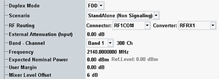

The following parameters configure the RF input path.
See also: "Connection Control (Measurements)"

Selects the duplex mode of the LTE signal: FDD or TDD.
Remote command:To connect a single TX antenna, use the standalone scenario, for example to measure a SISO signal.
To connect two TX antennas, use the "Two RF In" scenario, for example to measure a MIMO 2x2 signal. A basic frontend is required. The scenario is not supported with an advanced frontend. It is also not supported by the R&S CMW100.
Remote command:Selects the input path for the measured RF signal, i.e. the input connector and the RX module to be used.
For the scenario "Two RF In", the settings are defined per RF input ("In 1" and "In 2").
Remote command:Defines the value of an external attenuation (or gain, if the value is negative) in the input path. The power readings of the R&S CMW are corrected by the external attenuation value.
The external attenuation value is also used in the calculation of the maximum input power that the R&S CMW can measure.
If a correction table for frequency-dependent attenuation is active for the chosen connector, then the table name and a button are displayed. Press the button to display the table entries.
Center frequency of the RF analyzer. Set this frequency to the frequency of the measured RF signal to obtain a meaningful measurement result. The relation between operating band, frequency and channel number is defined by 3GPP (see "Operating Bands").
- Enter the frequency directly. The band and channel settings can be ignored or used for validation of the entered frequency. For validation, select the designated band. The channel number resulting from the selected band and frequency is displayed. For an invalid combination, no channel number is displayed.
- Select a band and enter a channel number valid for this band. The R&S CMW calculates the resulting frequency.
Defines the nominal power of the RF signal to be measured. An appropriate value for LTE signals is the peak output power at the DUT during the measurement. The "Ref. Level" is calculated as follows:
Reference level = Expected Nominal Power + User Margin
Note: The actual input power at the connectors must be within the level range of the selected RF input connector; refer to the data sheet. If all power settings are configured correctly, the actual power equals the "Reference Level" minus the "External Attenuation (Input)" value.
Margin that the R&S CMW adds to the "Expected Nominal Power" to determine its reference power ("Ref. Level"). The "User Margin" is typically used to account for the known variations of the RF input signal power, e.g. the variations due to a specific channel configuration.
The variations (crest factor) depend on the LTE signal parameters. If the "Expected Nominal Power" is set to the peak power during the measurement, a 0 dB user margin is sufficient.
Remote command:Varies the input level of the mixer in the analyzer path. A negative offset reduces the mixer input level. A positive offset increases the mixer input level. Optimize the mixer input level according to the properties of the measured signal.
Mixer level offset | Advantages | Possible shortcomings |
|---|---|---|
< 0 dB | Suppression of distortion (e.g. of the intermodulation products generated in the mixer) | Lower dynamic range (due to smaller signal-to-noise ratio) |
> 0 dB | High signal-to-noise ratio, higher dynamic range | Risk of intermodulation, smaller overdrive reserve |